树状数组 | Fenwick Tree | Binary Indexed Tree¶
树状数组是一种支持高效单点修改和区间求和两种操作的数据结构。
树状数组并不直接存储数组中的元素，而是将原有数据进行一定变换后再存入数组。如图所示，下方为原数组 \(a\)，下标用二进制表示。树状数组 \(c\) 是与原数组大小相同的数组，对应图中圆形结点，这些结点之间的关系可以用类似树的结构表示。具体来说，树状数组中每一结点存储的是其子结点之和，也是以其为根的子树所覆盖的原数组中的元素之和。例如，\(c_4 = c_2 + c_3 + a_4 = \sum_{i=1}^4 a_i\)。

若结点序号 \(x\) 是 \(2^n\) （\(n\) 尽可能大）的倍数，则它的子树管理小于等于 \(x\) 的连续 \(n+1\) 个元素，且 \(n+1\) 正好是 \(x\) 二进制表示中最低位的 1 代表的权值。利用补码的性质，可以直接得到 \(n+1 = x \operatorname{\&} -x\)，将这个运算记为 lowbit。
lowbit
对于 \(x \in \mathbb{N}\)，\(\operatorname{lowbit}(x) = x \operatorname{\&} -x\) 为 \(x\) 二进制表示中最低位的 1 的权值。
\(x = 0\) 时显然 \(\operatorname{lowbit}(x) = 0 \operatorname{\&} 0 = 0\)，符合定义。\(x > 0\) 时，将 \(x\) 的二进制从低到高拆分为若干位 0、一位 1、以及更高的其余位 \(x'\)。那么补码表示下的 \(x\)、\(\text{\textasciitilde} x\)、\(-x = \text{\textasciitilde}x+1\) 和 \(\operatorname{lowbit}(x)\) 分别为
\[ \begin{alignat*}{2} x &={}& (x')&10\cdots0, \\ \text{\textasciitilde}x &=& (\text{\textasciitilde}x')&01\cdots1, \\ -x &=& (\text{\textasciitilde}x')&10\cdots0, \\ x \operatorname{\&} -x &=& 0\cdots 0&10\cdots 0 \end{alignat*} \]
可以看到 \(\operatorname{lowbit}(x)\) 仅保留了 \(x\) 最低位的 1，其余位均为 0。
在原数组某位置 \(x\) 增加 \(k\) 时，就需要从 \(x\) 开始上溯每一祖先结点，均加上 \(k\)。每一次上溯所移动的距离正好就是当前结点序号的 lowbit 值。
在求取原数组某位置 \(x\) 的前缀和时，只需要从 \(x\) 开始向前，求取每一个子树之和。每一次向前移动的距离也是当前结点序号的 lowbit 值。
普通数组单点修改的复杂度是 \(O(1)\)，区间求和的复杂度是 \(O(n)\)。若使用前缀和数组，则两项指标互换。树状数组的单点修改和区间求和的复杂度都是 \(O(\log n)\)，很好地平衡了性能。
long long fenwick[500010];
inline int lowbit(int pos)
{
return pos & -pos;
}
inline void add(int pos, long long k, int n)
{
while(pos <= n)
{
fenwick[pos] += k;
pos += lowbit(pos);
}
}
inline long long sum(int pos)
{
long long res = 0;
while(pos >= 1)
{
res += fenwick[pos];
pos -= lowbit(pos);
}
return res;
}
如果需要单点取值，区间修改，则可以使用将每一个数据表示为与之前一位的差分，再使用树状数组存储。则单点取值的操作为 sum(x)，区间 \([x, y)\) 增加 \(k\) 的操作为 add(x, k), add(y, -k)。